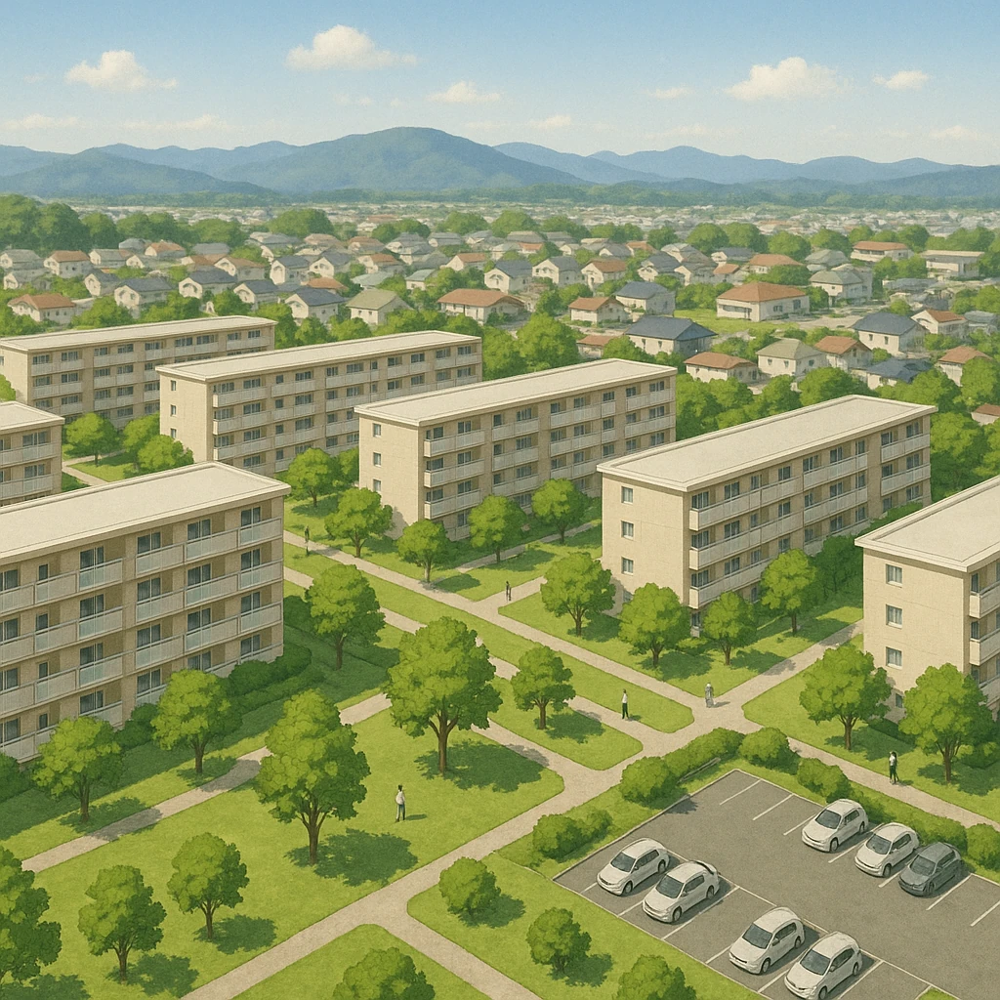

Ⅲ-5
開発④
郊外に、まるごと
新しい町
をつくる
⑤
ニュータウン
…大都市の
郊外
に計画的に作られた住宅地（地図中■印）。
千里
大阪府北部
泉北
大阪府南部
西神
神戸市西部
須磨
神戸市西部
平城・相楽
奈良県北部
洛西
京都市西部
なぜ作られた？
高度経済成長期、大阪・神戸・京都に人が集まりすぎて住宅が足りなくなったから。
今のなやみ
同じ時期に入居した人がいっせいに年をとり、
高齢化
と
建物の老朽化
が進んでいる。

第15章 近畿地方
SEED EDUCATION